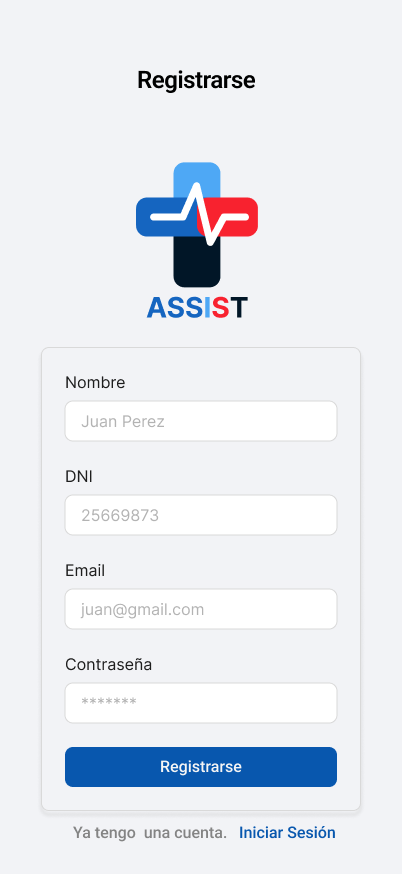
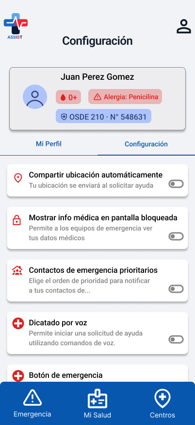

UX / UI · Trabajo final de facultad
Diseño de una app móvil de gestión de emergencias, de la investigación a la fundamentación de cada pantalla.
En una emergencia médica, cada paso extra que le pedís al usuario es una barrera real. Muchas personas tienen dificultades para solicitar ayuda de forma inmediata y sin errores, lo que retrasa la respuesta de los servicios de salud. ASSIST nació para resolver eso: una app que optimiza la comunicación entre pacientes y centros médicos mediante un botón de emergencia que envía automáticamente la ubicación y la información médica del paciente, sin pasos intermedios.
Fue mi trabajo final de la cursada de Diseño de Interfaces de Usuario (Facultad de Ingeniería, UNLPam), en equipo con Mariano Salto, Micaela Alemany y Agustín Squizziatto.
Trabajamos las cuatro etapas del proyecto sin una división fija de tareas: entrevistas, mapas de empatía, análisis de competencia, propuesta de diseño y prototipado en Figma los armamos entre los cuatro en cada etapa, más que repartirnos una sección cada uno.
Arrancamos con un mapa de actores para identificar a todos los que intervienen en el ecosistema de una emergencia: en el núcleo, el sistema Assist; alrededor, los usuarios primarios (paciente, tutor, médico, enfermero, ambulancia) y en capas más externas, usuarios secundarios, actores externos y factores de contexto como las políticas sanitarias.
En paralelo hicimos una investigación de escritorio sobre organismos de salud, normativas y publicaciones académicas, organizada en una matriz de fuentes y una tabla de hallazgos. De ahí surgieron el objetivo general —identificar los obstáculos para solicitar asistencia médica en una emergencia— y el específico, centrado en las dificultades de los adultos mayores frente a este tipo de apps. Las hipótesis: menos pasos aumentan la probabilidad de completar la solicitud, y una interfaz más simple y visualmente clara mejora la usabilidad para ese grupo.
Entrevistamos a tres perfiles clave: una adulta mayor, una docente de Enfermería y un estudiante avanzado de Enfermería (no pudimos acceder a personal en ejercicio dentro de instituciones sanitarias). En los tres casos aparecieron las mismas barreras: la demora en pedir ayuda y la dificultad para dar información precisa bajo estrés. El perfil de la adulta mayor sumó además desconfianza hacia las apps digitales y dependencia de terceros para trámites tecnológicos.
De ahí construimos tres mapas de empatía. El de la adulta mayor fue el más determinante para el diseño: su dolor principal es quedarse sola sin poder pedir ayuda, y lo que gana es que su familia pueda acompañarla a distancia sin invadir su privacidad. Eso definió la necesidad de una interfaz mínima, confiable y de una sola acción.
Con ese perfil armamos un único user persona: Susana, una mujer mayor que vive sola y solo usa apps de mensajería básica. Su motivación central es la autonomía —activar una emergencia con un solo gesto, sin depender de nadie— y su mayor frustración es la desconfianza hacia lo digital.
El mapa de experiencia de Susana recorrió el antes, durante y después de una emergencia. El momento crítico es el "durante": el estado emocional escala a miedo y confusión, no encuentra los números de emergencia y no puede explicar lo que le pasa. La oportunidad de diseño que salió de ahí fue clara: comunicación automática y ubicación compartida, sin pedirle ninguna acción adicional al usuario.
Analizamos tres apps existentes —PulsePoint, Shamman y CodigoRojo— a partir de información pública, ya que requieren suscripción. Ninguna resolvía de forma integral las necesidades de un usuario no técnico en un contexto de emergencia: PulsePoint tenía sobrecarga visual, Shamman una curva de aprendizaje alta pensada para personal médico, y CodigoRojo —la más cercana en concepto a ASSIST— buena jerarquía visual pero poca información contextual durante la espera. Ahí encontramos el espacio de ASSIST: una interfaz mínima, de una sola acción, con transmisión automática de información.
Toda decisión de interfaz respondió a una premisa: activar una solicitud de emergencia con la menor cantidad de pasos posible, incluso bajo estrés o capacidad reducida.
En la presentación, docentes y compañeros marcaron dos puntos: qué pasa cuando el usuario no puede ni tocar la pantalla, y qué tan clara es la confirmación del pedido de ayuda. Habíamos pensado un widget de emergencia en la pantalla principal del celular, pero al analizar el caso de una persona que ni siquiera puede desbloquear el teléfono, nos dimos cuenta de que seguía dependiendo de interacción física. Por eso incorporamos dos alternativas de activación configurables: el botón lateral del dispositivo y comandos de voz, ninguna de las dos requiere desbloquear ni abrir la app. También revisamos la pantalla de cuenta regresiva para que el estado de "solicitud en proceso" quede más explícito y baje la incertidumbre en la espera.
Lo que más me llevo de este proyecto es que diseñar para una emergencia exige un nivel de simplificación distinto al habitual: cada paso de más es una barrera real en un contexto de pánico. Como limitación, no pudimos probar las apps competidoras de forma directa (todo el benchmarking fue con fuentes secundarias), y el prototipo todavía no contempla integración real con sistemas de historia clínica electrónica. Como próximos pasos: integración con wearables para usuarios de riesgo, pruebas de usabilidad con adultos mayores en emergencias simuladas, y priorización automática de solicitudes por IA según el perfil clínico.




